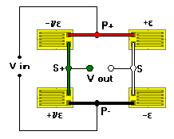

2+2v (Bending) Bridge
2+2v (Bending) Bridge2+2v (Bending) Bridge
Associated Application
General Considerations
Similar to the 2(1+v) configuration except that two half-bridges are used with gages on either side of a bending beam. Because separate gages are used in each half bridge, wiring is more complicated. Unlike the 2(1+v) arrangement, however, axial strains are cancelled.

Calculations of output assume a uniaxial stress field. The output varies linearly with strain under these conditions.
Inputs (Limits)
 Strain (-5000 to +5000 microstrain)
Strain (-5000 to +5000 microstrain)
Gage Factor (1.0 to 5.0)
Poisson�s Ratio (0.1 to 0.4)
Calculations
 Output (mV/V)
Output (mV/V)